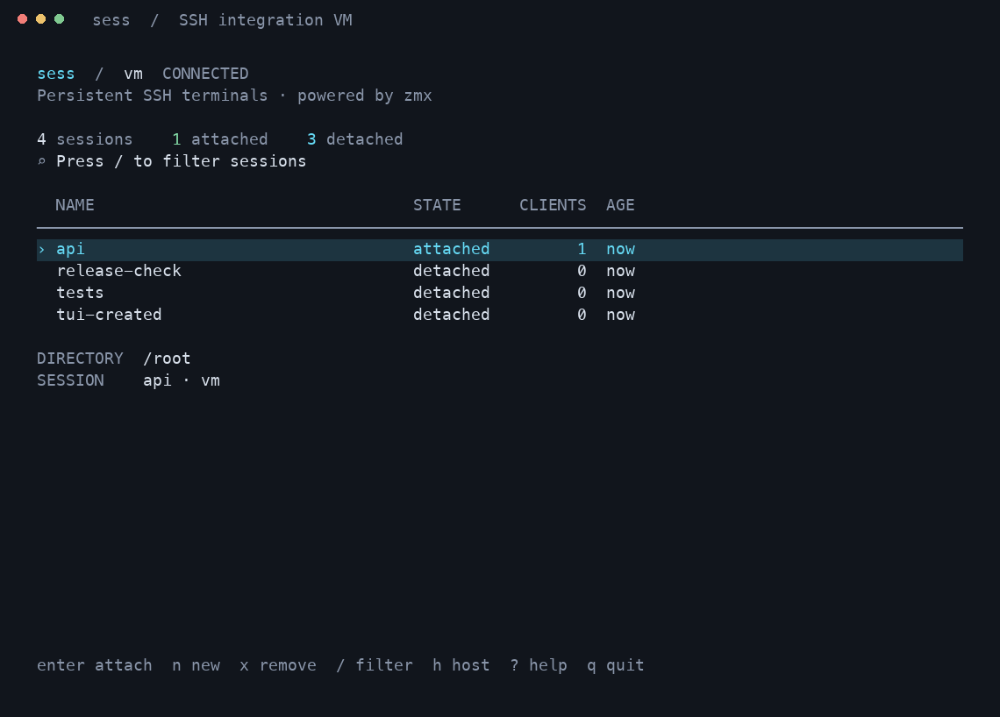

A persistent
SSH terminal.
Your work stays on the VM. Name a terminal, disconnect, and come back to the same running shell.
Download v0.6.0 · macOS & Linux · ARM64 & AMD64
$ sess init dev $ sess set --host dev $ sess new work # Work on the VM. Press Ctrl+\ to detach. $ sess attach work
Pick up where you left off.
Detach intentionally or lose your network connection. zmx holds your terminal on the VM; sess gets you back into it. Automatic reconnection stops when you intentionally detach.
Your terminal, your layout.
Use your terminal app for tabs and windows. Run sess for a searchable session browser, then attach directly to your remote shell.
Your sessions, in one place.

Captured from a real SSH integration test. Press Enter to attach, n to create, or / to filter.
A small command set.
| Command | What it does |
|---|---|
sess init <host> | Prepare sess and zmx on your VM |
sess set --host <host> | Save your default SSH destination |
sess new <name> | Create and attach · shortcut n |
sess attach <name> | Return to a session · shortcut a |
sess ls | List sessions · --json for scripts |
sess remove <name> | Terminate a session · shortcut rm |
Use --host or -h to override the host for one command. SSH aliases and user@host work throughout. Use --help for help.
Install on your laptop.
brew install deepaksilaych/tap/sess
# Or run with Node.js 22+
npx sess-cli
# Or install a permanent command
npm install -g sess-climacOS and Linux, ARM64 and AMD64. The npm launcher verifies and caches the official release binary on first run.
SSH connects. zmx persists.
sess uses system SSH and installs a small helper on the VM. Each persistent terminal lives under zmx, separately from its SSH connection. No extra network port or laptop background service is needed.
Live sessions depend on the VM and backend staying alive. A VM reboot ends its processes; persistence is not a backup or automatic job recovery.
Read the full user guide ↗